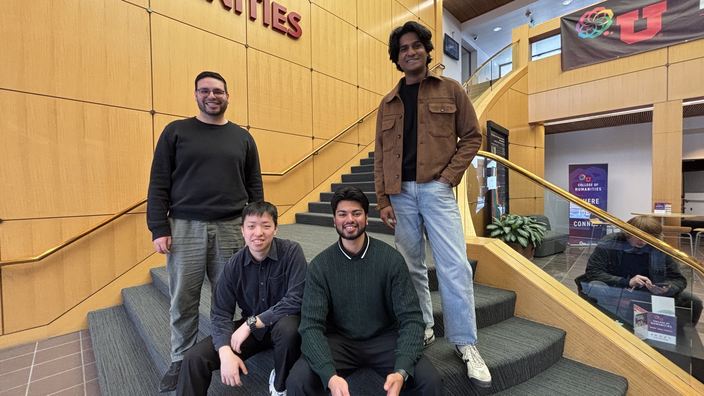

Skip to content
⌘
FNDR
Team
Tutorials
Download for Mac
Team FNDR.
The people building a way back. Select a card to meet the team.
⌘
FNDR / a thread worth keeping
✳
Something comes back.

Anurup Kumar
Minh Le
Felipe Marin
Kunj Rathod
×
⌘
What they worked on
LinkedIn
GitHub
Email
FNDR / the people behind it